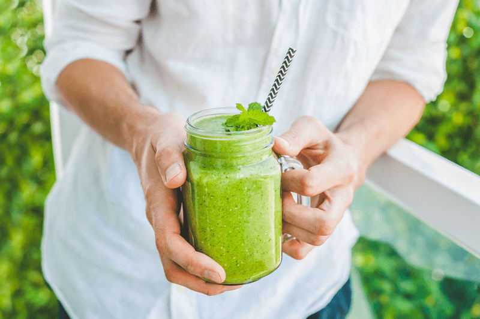

Banana-Free Smoothie Options
Bananas are popular in smoothies because they help cover the taste of greens, add a little sweetness, and most of all they create a thick creamy texture. Over the years, I have come to learn that not everyone is a fan of bananas and there are others who are looking for ways to reduce the sugars in their smoothies. Below, I will share some alternative foods that you can use in your smoothies instead of the golden banana.

Banana Alternatives
There are a lot of healthy substitutes for bananas, and many of them won’t add any extra sugar. The following options will add a perfect creamy mouth-texture, as well as a wide host of incredible health benefits. I hope this posting inspires you to think outside of the banana!
Avocado
- Avocados create an extra creamy texture for smoothies. They have a light, delicate taste that won’t alter the other flavors in your drink. The key to using avocados in your smoothies is to use ones that are ripe. Hard, unripe avocados will create a bitter taste and won’t blend as well.
- Their healthy fat content not only helps to create a creamy texture, but it also keeps you satiated, helping you to feel full longer.
- For smoothie purposes, you can cut your ripe avocadoes into small chunks then spread them out on a cookie tray in a single layer and freeze. Once solid you can place them in a freezer-safe container for future smoothies.
- I like to add 1/2 to 1 avocado per smoothie (size depending).
- Click on the following links to learn more: Avocado (fat replacer, emulsifier) and Avocados (selecting, ripening and freezing)
- Chia and flax seeds are great for adding thickness to a smoothie.
- Chia seeds won’t affect the flavor in any way.
- Add 1 tablespoon to your blender or stir chia seeds into a smoothie and give it a minute to thicken. You can always add more, but start with less and see how it is.
- You can learn more about chia seeds (here).
Flax Seeds
- Flax seeds need to be well blended and broken down (through grinding) before consuming. Unlike chia seeds, flax seeds need to either be soaked or broken down in order for the body to absorb the nutrients.
- Start with 1 tablespoon.
- Flax seeds can impart a nutty taste to your smoothie unless you are adding it to ingredients that are potent in flavor.
- You can learn more about flax seeds (here).
Frozen Organic Fruit
- Frozen fruit is an excellent option for many reasons. They act like a thicker (due to their pectin content) to a smoothie, provide natural sweetness, and adds the cold element, so you don’t have to add ice.
- Mango, peach, pineapple, and young Thai coconuts are perfect for extra creaminess.
- But remember, fruit is a form of sugar and should be used in small amounts.
- Click (here) to see my thoughts on why and how to purchase organic frozen fruits.
Hemp Seeds
- Adding 1-3 Tbsp of hemp seeds will offer a neutral flavor and creaminess to a smoothie. If paired with less flavorful ingredients, hemp seeds can impart a nutty taste to your drink.
- Look for hemp hearts since they are shelled and be sure to blend well.
- Most nuts and seeds require soaking before using them, but hemp seeds don’t… learn why (here).
- Interested in learning how they grow and how they are harvested? Great, click (here) to learn more about this superfood.
- Want to learn more about their health benefits? Great, I love that you want to learn! Click (here) for a quick rundown on why this ingredient is a wonderful addition to your diet.
Irish Moss Paste (gel)
- Irish moss is virtually flavor-free if made correctly. You can learn how to make it (here).
- It works beautifully as a thickener to a smoothie.
- Add 1 Tbsp of Irish moss gel for each cup of smoothie you are making. If you still feel that it needs to be thicker, add more!
- To increase your knowledge about Irish moss, click (here).
Nuts & Seed Butter
- Just like avocados, nut butters are high in fat (monounsaturated) and lend to that same creamy texture.
- Each nut and seed butter will bring a different flavor profile to a smoothie, so keep that in mind. Almond, macadamia, and cashew butter are the most neutral in flavor.
- Start with 2 Tbsp of butter and taste test. Add more if needed, but watch the fat intake if that is a concern for you.
Ripe Pears
- Not only do they act as a sweetener, but they also create a creamy texture. How can they possibly add creaminess? Glad you asked! It is due to their high amount of pectin, which is a water-soluble fiber that is also known to thicken up liquids.
- You will want to use ripe organic pears.
- If your pears are hard and unripe, place them in a brown paper bag along with an apple, fold the opening of the bag down, and set it on the countertop for a few days. Check them daily, so they don’t over-ripen.
- Learn more about them (here).
Rolled Oats
- Due to their fiber content, rolled oats help with a feeling of fullness, and are a great way to make a green smoothie more of a meal replacement.
- Adding 3-4 Tbsps to a 24-ounce smoothie and you will have a rich, creamy consistency.
- Curious about how they are grown and harvested? Click (here).
- Have you heard that it’s best to soak oats before using them? If you are interested in learning why click (here).
- Is there such a thing as truly raw oats? Glad you asked, you can read about it (here).
- Have you always thought that oats contain gluten? That’s not the case, learn more (here).
Sweet Potato (cooked)
- If you are not opposed to adding a cooked ingredient to your smoothie, white sweet potato is a wonderful option. They are slightly sweet, and when blended, they create a creamy smoothie.
- You can bake the sweet potatoes whole in the oven, allow them to cool, and then store them in the fridge. When you are ready to create your smoothie masterpiece, add 1/4 – 1/2 cup of cooked sweet potato.
- You can also create a sweet potato puree then place it in ice cube trays and freeze. Once frozen, pop them out and put them in a freezer-safe container for future use.
- Cooked and cooled sweet potatoes are also considered a resistant starch. “Resistant starch is a kind of starch that is not digested in the small intestine. Instead, your gut bacteria processes it, creating beneficial molecules that promote balanced blood sugar and healthy gut flora. In other words, when you eat resistant starch, it “resists” digestion and does not spike blood sugar or insulin.” (1)
Zucchini
- Frozen zucchini works wonders in a smoothie by adding an amazing creamy texture and coldness to your smoothie.
- Zucchini is very mild in flavor and won’t overpower the end flavor of your favorite smoothie combination.
- To freeze, chop it into pieces then arrange on a baking sheet in a single layer and freeze. Once solid, place in a freezer-safe container or ziplock bag and store in the freezer.
- Leave the skin on for added nutrition, but only if it is organic, otherwise peel it!
Yogurt (raw/vegan)
- Yogurt is another wonderful food that can add creaminess to your smoothies.
- The flavor is relatively neutral, and it is packed with a neat little package of probiotics which aid in a healthier gut track.
- Start with 1/2 a cup and adjust from there.
I hope that all the options I shared above are helpful. Please leave a comment below and have a blessed day, amie sue
© AmieSue.com